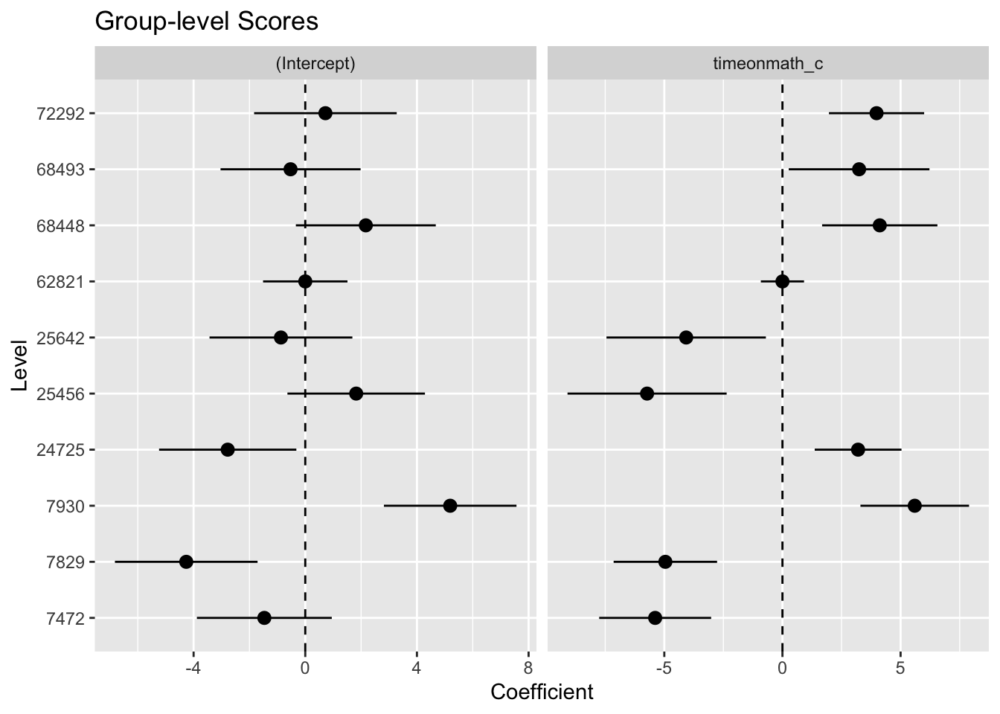
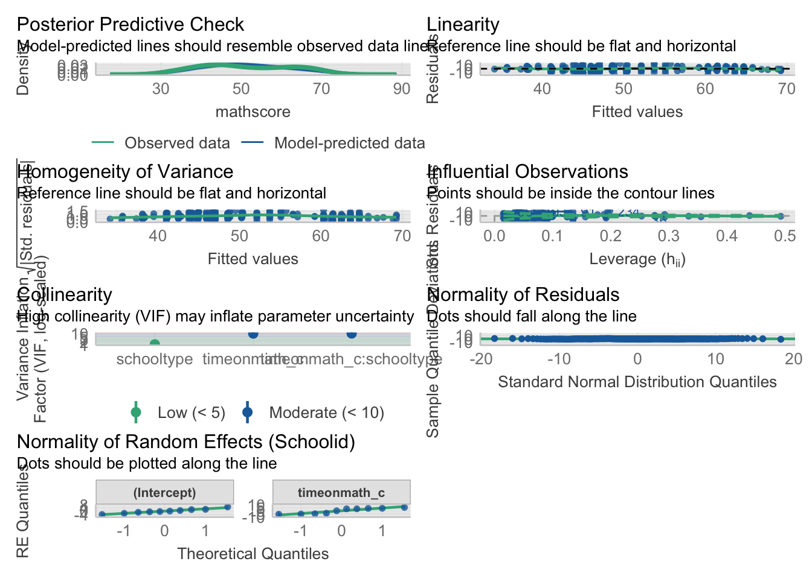

library(tidyverse)
library(ggrain) #for making raincloud plots
library(easystats) #to get ICC
library(lme4) #for running multilevel (aka mixed-effects) models
library(lmerTest) #for generating test statistics for multilevel models
library(partR2) #for generating semi-partial R^2
library(performance) #for examining model assumptionsModule 13: Lab Starter (KEY)
Purpose
The goal of today’s lab is to provide you with experience running and interpreting mixed effects models.
For today’s lab, you will need to load the following libraries.
Research scenario
We will use the same data we worked with last week, the data examines the effect of time spent on math homework on math achievement scores and how school type (public versus private) influences this effect.
Read in the data
Today’s dataset is called NELS88.csv. Let’s read it in and name it nels.
nels <- read_csv("data/NELS88.csv")Examine the Data
- Use
View()to examine the full dataset - Use
str()to look at the structure of the data - Use
head()to look at the first few rows of the data
View(nels)
str(nels)spc_tbl_ [260 × 15] (S3: spec_tbl_df/tbl_df/tbl/data.frame)
$ Schoolid : num [1:260] 7472 7472 7472 7472 7472 ...
$ studentid : num [1:260] 3 8 13 17 27 28 30 36 37 42 ...
$ sex : num [1:260] 2 1 1 1 2 2 2 1 2 2 ...
$ race : num [1:260] 4 4 4 4 4 4 4 4 4 4 ...
$ timeonmath : num [1:260] 1 0 0 1 2 1 5 1 1 2 ...
$ schooltype : chr [1:260] "public" "public" "public" "public" ...
$ ses : num [1:260] -0.13 -0.39 -0.8 -0.72 -0.74 -0.58 -0.83 -0.51 -0.56 0.21 ...
$ parented : num [1:260] 2 2 2 2 2 2 2 3 2 3 ...
$ mathscore : num [1:260] 48 48 53 42 43 57 33 64 36 56 ...
$ classstruct : num [1:260] 2 2 2 2 2 2 2 2 2 2 ...
$ schoolsize : num [1:260] 3 3 3 3 3 3 3 3 3 3 ...
$ urbanicity : num [1:260] 2 2 2 2 2 2 2 2 2 2 ...
$ geography : num [1:260] 2 2 2 2 2 2 2 2 2 2 ...
$ percentminority: num [1:260] 0 0 0 0 0 0 0 0 0 0 ...
$ stuteachratio : num [1:260] 19 19 19 19 19 19 19 19 19 19 ...
- attr(*, "spec")=
.. cols(
.. Schoolid = col_double(),
.. studentid = col_double(),
.. sex = col_double(),
.. race = col_double(),
.. timeonmath = col_double(),
.. schooltype = col_character(),
.. ses = col_double(),
.. parented = col_double(),
.. mathscore = col_double(),
.. classstruct = col_double(),
.. schoolsize = col_double(),
.. urbanicity = col_double(),
.. geography = col_double(),
.. percentminority = col_double(),
.. stuteachratio = col_double()
.. )
- attr(*, "problems")=<externalptr> head(nels)# A tibble: 6 × 15
Schoolid studentid sex race timeonmath schooltype ses parented mathscore
<dbl> <dbl> <dbl> <dbl> <dbl> <chr> <dbl> <dbl> <dbl>
1 7472 3 2 4 1 public -0.13 2 48
2 7472 8 1 4 0 public -0.39 2 48
3 7472 13 1 4 0 public -0.8 2 53
4 7472 17 1 4 1 public -0.72 2 42
5 7472 27 2 4 2 public -0.74 2 43
6 7472 28 2 4 1 public -0.58 2 57
# ℹ 6 more variables: classstruct <dbl>, schoolsize <dbl>, urbanicity <dbl>,
# geography <dbl>, percentminority <dbl>, stuteachratio <dbl>Question: What are the fixed effects?
Question: What is the random factor?
Question: What changes might you want to make to the data structure?
Let’s make that change to the data.
#students: make schoolid and schooltype a factor
nels <- nels %>%
mutate(Schoolid = as.factor(Schoolid),
schooltype = as.factor(schooltype))Now, let’s get some summary statistics about our data.
summary_stats <- nels %>%
group_by(Schoolid) %>%
summarise(n_students = n()) %>%
ungroup() %>%
summarise(
n_clusters = n(),
total_students = sum(n_students),
average_students_per_classroom = mean(n_students),
SD_students_per_classroom = sd(n_students),
min_students_in_classroom = min(n_students),
max_students_in_classroom = max(n_students)
)
# Extracting the values to variables for easier printing later
n_clusters <- summary_stats$n_clusters
total_students <- summary_stats$total_students
average_students <- summary_stats$average_students_per_classroom
sd_students <- summary_stats$SD_students_per_classroom
min_students <- summary_stats$min_students_in_classroom
max_students <- summary_stats$max_students_in_classroomTo aid in interpretation, lets center the timeonmath variable.
Question: Do we want to group mean center or grand mean center?
#lots of ways to do this, first get means for each school
school_means <- nels %>%
group_by(Schoolid) %>%
summarise(mean_time = mean(timeonmath, na.rm = TRUE))
#join with nels data and then center
nels <- nels %>%
left_join(school_means) %>%
mutate(timeonmath_c = timeonmath - mean_time)Now, we will visualize the relations in our data. Let’s create one visualization examining the relation between timeonmathand mathscore and another examining the relation between schooltype and mathscore.
#students: fill in the code below to create these visualizations
ggplot(nels, aes(x = timeonmath, y = mathscore, group = Schoolid)) +
geom_point(aes(color = as.factor(Schoolid))) +
geom_smooth(method = "lm", se = FALSE, aes(group = Schoolid, color = as.factor(Schoolid))) +
theme_minimal() +
theme(legend.position = "none") +
labs(title = "Effect of Time on Math on Math Score by School", x = "Time on Math", y = "Math Score")ggplot(nels, aes(x = schooltype, y = mathscore, fill = schooltype)) +
geom_rain(rain.side="l") +
labs(x="School Type", y="Math Score", title="Effect of School Type on Math Score") +
theme(legend.position = "none") Question: What do these plots suggest?
First, we may want to know how much of the variance in mathscore is explained by Schoolid. We did this last week, but let’s get the ICC using the null model.
Question: What goes into the null model?
#students: fit the null model and calculate the ICC "by hand"
#fit the null model
null <- lmer(mathscore ~ 1 + (1|Schoolid), data = nels)
summary(null)Linear mixed model fit by REML. t-tests use Satterthwaite's method [
lmerModLmerTest]
Formula: mathscore ~ 1 + (1 | Schoolid)
Data: nels
REML criterion at convergence: 1871.7
Scaled residuals:
Min 1Q Median 3Q Max
-2.34027 -0.65554 -0.08304 0.54211 2.87452
Random effects:
Groups Name Variance Std.Dev.
Schoolid (Intercept) 34.01 5.832
Residual 72.26 8.500
Number of obs: 260, groups: Schoolid, 10
Fixed effects:
Estimate Std. Error df t value Pr(>|t|)
(Intercept) 48.861 1.927 9.631 25.35 3.85e-10 ***
---
Signif. codes: 0 '***' 0.001 '**' 0.01 '*' 0.05 '.' 0.1 ' ' 1#first, lets calculate the ICC "by hand" from the output (between groups / (between groups + within groups))
34.01 / (34.01+72.26)[1] 0.3200339#now, let's use the `icc` function in `{easystats}` to generate the ICC.
icc(null)# Intraclass Correlation Coefficient
Adjusted ICC: 0.320
Unadjusted ICC: 0.320Question: How do you interpret the ICC? Should we be concerned about clustering in our data?
We will now build up from the last model. Fit a model that includes timeonmath and schooltype (no interaction). Include a random intercept for Schoolid.
model_1 <- lmer(mathscore ~ timeonmath_c + schooltype + (1|Schoolid), data = nels)
summary(model_1)Linear mixed model fit by REML. t-tests use Satterthwaite's method [
lmerModLmerTest]
Formula: mathscore ~ timeonmath_c + schooltype + (1 | Schoolid)
Data: nels
REML criterion at convergence: 1826.9
Scaled residuals:
Min 1Q Median 3Q Max
-2.5898 -0.6920 -0.0387 0.5858 3.2982
Random effects:
Groups Name Variance Std.Dev.
Schoolid (Intercept) 8.744 2.957
Residual 64.571 8.036
Number of obs: 260, groups: Schoolid, 10
Fixed effects:
Estimate Std. Error df t value Pr(>|t|)
(Intercept) 62.8209 3.1157 5.5361 20.163 2.15e-06 ***
timeonmath_c 2.1366 0.3836 249.1343 5.571 6.57e-08 ***
schooltypepublic -15.5963 3.3188 5.7738 -4.699 0.00368 **
---
Signif. codes: 0 '***' 0.001 '**' 0.01 '*' 0.05 '.' 0.1 ' ' 1
Correlation of Fixed Effects:
(Intr) tmnmt_
timeonmth_c 0.000
schltyppblc -0.939 0.000Question: How would you interpret the fixed effects in this model? …the random effects?
Let’s continue building our model. Fit a model that includes an interaction between timeonmath and schooltype.
model_2 <- lmer(mathscore ~ timeonmath_c * schooltype + (1|Schoolid), data = nels)
summary(model_2)Linear mixed model fit by REML. t-tests use Satterthwaite's method [
lmerModLmerTest]
Formula: mathscore ~ timeonmath_c * schooltype + (1 | Schoolid)
Data: nels
REML criterion at convergence: 1819.6
Scaled residuals:
Min 1Q Median 3Q Max
-2.9967 -0.6769 -0.0299 0.6147 3.5834
Random effects:
Groups Name Variance Std.Dev.
Schoolid (Intercept) 8.80 2.966
Residual 63.28 7.955
Number of obs: 260, groups: Schoolid, 10
Fixed effects:
Estimate Std. Error df t value Pr(>|t|)
(Intercept) 62.8209 3.1216 5.5804 20.124 2.01e-06 ***
timeonmath_c 1.0946 0.5682 248.1315 1.927 0.05517 .
schooltypepublic -15.5968 3.3243 5.8143 -4.692 0.00364 **
timeonmath_c:schooltypepublic 1.8830 0.7638 248.1315 2.465 0.01436 *
---
Signif. codes: 0 '***' 0.001 '**' 0.01 '*' 0.05 '.' 0.1 ' ' 1
Correlation of Fixed Effects:
(Intr) tmnmt_ schlty
timeonmth_c 0.000
schltyppblc -0.939 0.000
tmnmth_c:sc 0.000 -0.744 0.000Now, we’ll use a likelihood ratio test to compare the model with just main effects and the interaction model.
Question: What method of maximum likelihood estimation should we use here (FIML or REML)? Why?
#students: run the likelihood ratio test, use the correct maximum likelihood estimation
test_likelihoodratio(model_1, model_2)# Likelihood-Ratio-Test (LRT) for Model Comparison (ML-estimator)
Name | Model | df | df_diff | Chi2 | p
-------------------------------------------------------
model_1 | lmerModLmerTest | 5 | | |
model_2 | lmerModLmerTest | 6 | 1 | 6.06 | 0.014For completeness, let’s also take a look at the AIC and BIC values.
model_performance(model_1)# Indices of model performance
AIC | AICc | BIC | R2 (cond.) | R2 (marg.) | ICC | RMSE | Sigma
--------------------------------------------------------------------------------
1836.886 | 1837.122 | 1854.690 | 0.495 | 0.426 | 0.119 | 7.896 | 8.036model_performance(model_2)# Indices of model performance
AIC | AICc | BIC | R2 (cond.) | R2 (marg.) | ICC | RMSE | Sigma
--------------------------------------------------------------------------------
1831.560 | 1831.892 | 1852.924 | 0.506 | 0.437 | 0.122 | 7.801 | 7.955model_performance(model_1)$AIC - model_performance(model_2)$AIC [1] 5.326042model_performance(model_1)$BIC - model_performance(model_2)$BIC [1] 1.765361Question: What can we say from the AIC/BIC analysis?
Using the best fitting model from above, fit a model that adds random slopes for timeonmath_c
#students: add a random slope for timeonmath_c
model_3 <- lmer(mathscore ~ timeonmath_c * schooltype + (timeonmath_c|Schoolid), data = nels)
summary(model_3)Linear mixed model fit by REML. t-tests use Satterthwaite's method [
lmerModLmerTest]
Formula: mathscore ~ timeonmath_c * schooltype + (timeonmath_c | Schoolid)
Data: nels
REML criterion at convergence: 1744.9
Scaled residuals:
Min 1Q Median 3Q Max
-2.63573 -0.56011 -0.05364 0.63859 2.58757
Random effects:
Groups Name Variance Std.Dev. Corr
Schoolid (Intercept) 9.686 3.112
timeonmath_c 25.249 5.025 0.42
Residual 43.106 6.565
Number of obs: 260, groups: Schoolid, 10
Fixed effects:
Estimate Std. Error df t value Pr(>|t|)
(Intercept) 62.821 3.214 6.300 19.546 7.08e-07 ***
timeonmath_c 1.095 5.047 6.978 0.217 0.83449
schooltypepublic -15.604 3.410 6.469 -4.576 0.00313 **
timeonmath_c:schooltypepublic 1.071 5.337 7.070 0.201 0.84666
---
Signif. codes: 0 '***' 0.001 '**' 0.01 '*' 0.05 '.' 0.1 ' ' 1
Correlation of Fixed Effects:
(Intr) tmnmt_ schlty
timeonmth_c 0.410
schltyppblc -0.942 -0.386
tmnmth_c:sc -0.387 -0.946 0.406test_likelihoodratio(model_2, model_3)# Likelihood-Ratio-Test (LRT) for Model Comparison (REML-estimator)
Name | Model | df | df_diff | Chi2 | p
---------------------------------------------------------
model_2 | lmerModLmerTest | 6 | | |
model_3 | lmerModLmerTest | 8 | 2 | 74.62 | < .001Let’s additionally add a random slope for schooltype.
#students: add a random slope for schooltype
model_4 <- lmer(mathscore ~ timeonmath_c * schooltype + (timeonmath_c + schooltype|Schoolid), data = nels)Warning in checkConv(attr(opt, "derivs"), opt$par, ctrl = control$checkConv, :
unable to evaluate scaled gradientWarning in checkConv(attr(opt, "derivs"), opt$par, ctrl = control$checkConv, :
Model failed to converge: degenerate Hessian with 2 negative eigenvaluesWarning: Model failed to converge with 2 negative eigenvalues: -9.6e-06
-6.1e-03summary(model_4)Linear mixed model fit by REML. t-tests use Satterthwaite's method [
lmerModLmerTest]
Formula: mathscore ~ timeonmath_c * schooltype + (timeonmath_c + schooltype |
Schoolid)
Data: nels
REML criterion at convergence: 1744.9
Scaled residuals:
Min 1Q Median 3Q Max
-2.63573 -0.56011 -0.05364 0.63860 2.58756
Random effects:
Groups Name Variance Std.Dev. Corr
Schoolid (Intercept) 41.65 6.454
timeonmath_c 25.25 5.025 -0.03
schooltypepublic 48.63 6.973 -0.90 0.22
Residual 43.11 6.565
Number of obs: 260, groups: Schoolid, 10
Fixed effects:
Estimate Std. Error df t value Pr(>|t|)
(Intercept) 62.820896 6.503462 0.007349 9.660 0.961
timeonmath_c 1.094640 5.046848 6.977536 0.217 0.834
schooltypepublic -15.603806 6.602670 0.007807 -2.363 0.969
timeonmath_c:schooltypepublic 1.070671 5.337472 7.069189 0.201 0.847
Correlation of Fixed Effects:
(Intr) tmnmt_ schlty
timeonmth_c -0.032
schltyppblc -0.985 0.032
tmnmth_c:sc 0.031 -0.946 -0.009
optimizer (nloptwrap) convergence code: 0 (OK)
unable to evaluate scaled gradient
Model failed to converge: degenerate Hessian with 2 negative eigenvaluesQuestion: What happened when you added the random slope for
schooltype? Why do you think this happened? What should you do?
We might want to know whether its useful to include a random slope for timeonmath_c. To assess this, let’s compare the model with only a random intercept (model_2) to a model with a random intercept and random slope for timeonmath_c (model_3).
Question: What method of maximum likelihood estimation should we use here (FIML or REML)? Why?
test_likelihoodratio(model_2, model_3)# Likelihood-Ratio-Test (LRT) for Model Comparison (REML-estimator)
Name | Model | df | df_diff | Chi2 | p
---------------------------------------------------------
model_2 | lmerModLmerTest | 6 | | |
model_3 | lmerModLmerTest | 8 | 2 | 74.62 | < .001Question: Which is the best fitting model?
Using the best model, interpret the fixed and random effects.
summary(model_3)Linear mixed model fit by REML. t-tests use Satterthwaite's method [
lmerModLmerTest]
Formula: mathscore ~ timeonmath_c * schooltype + (timeonmath_c | Schoolid)
Data: nels
REML criterion at convergence: 1744.9
Scaled residuals:
Min 1Q Median 3Q Max
-2.63573 -0.56011 -0.05364 0.63859 2.58757
Random effects:
Groups Name Variance Std.Dev. Corr
Schoolid (Intercept) 9.686 3.112
timeonmath_c 25.249 5.025 0.42
Residual 43.106 6.565
Number of obs: 260, groups: Schoolid, 10
Fixed effects:
Estimate Std. Error df t value Pr(>|t|)
(Intercept) 62.821 3.214 6.300 19.546 7.08e-07 ***
timeonmath_c 1.095 5.047 6.978 0.217 0.83449
schooltypepublic -15.604 3.410 6.469 -4.576 0.00313 **
timeonmath_c:schooltypepublic 1.071 5.337 7.070 0.201 0.84666
---
Signif. codes: 0 '***' 0.001 '**' 0.01 '*' 0.05 '.' 0.1 ' ' 1
Correlation of Fixed Effects:
(Intr) tmnmt_ schlty
timeonmth_c 0.410
schltyppblc -0.942 -0.386
tmnmth_c:sc -0.387 -0.946 0.406model_parameters(model_3, effects="fixed")# Fixed Effects
Parameter | Coefficient | SE | 95% CI
-------------------------------------------------------------------------
(Intercept) | 62.82 | 3.21 | [ 56.49, 69.15]
timeonmath c | 1.09 | 5.05 | [ -8.84, 11.03]
schooltype [public] | -15.60 | 3.41 | [-22.32, -8.89]
timeonmath c × schooltype [public] | 1.07 | 5.34 | [ -9.44, 11.58]
Parameter | t(252) | p
----------------------------------------------------
(Intercept) | 19.55 | < .001
timeonmath c | 0.22 | 0.828
schooltype [public] | -4.58 | < .001
timeonmath c × schooltype [public] | 0.20 | 0.841 model_parameters(model_3, effects="random") #note that the pulls out the SD, not the variance# Random Effects
Parameter | Coefficient | SE | 95% CI
---------------------------------------------------------------------------
SD (Intercept: Schoolid) | 3.11 | 0.94 | [ 1.72, 5.63]
SD (timeonmath_c: Schoolid) | 5.02 | 1.35 | [ 2.97, 8.51]
Cor (Intercept~timeonmath_c: Schoolid) | 0.42 | 0.43 | [-0.52, 0.90]
SD (Residual) | 6.57 | 0.30 | [ 6.00, 7.18]Note: If there was an issue with the intercept and slope correlation (e.g., the model was singular because the correlation was 1 or -1), I could remove it from the model.
#here's how I'd do that. notice that the correlation is no longer part of the summary.
model_5 <- lmer(mathscore ~ timeonmath_c * schooltype + (timeonmath_c||Schoolid), data = nels)
summary(model_5)Linear mixed model fit by REML. t-tests use Satterthwaite's method [
lmerModLmerTest]
Formula: mathscore ~ timeonmath_c * schooltype + (timeonmath_c || Schoolid)
Data: nels
REML criterion at convergence: 1746.1
Scaled residuals:
Min 1Q Median 3Q Max
-2.63619 -0.56061 -0.06086 0.62685 2.55310
Random effects:
Groups Name Variance Std.Dev.
Schoolid (Intercept) 9.683 3.112
Schoolid.1 timeonmath_c 25.577 5.057
Residual 43.091 6.564
Number of obs: 260, groups: Schoolid, 10
Fixed effects:
Estimate Std. Error df t value Pr(>|t|)
(Intercept) 62.821 3.214 6.300 19.549 7.07e-07 ***
timeonmath_c 1.095 5.079 6.987 0.216 0.83552
schooltypepublic -15.605 3.410 6.469 -4.576 0.00313 **
timeonmath_c:schooltypepublic 1.042 5.371 7.078 0.194 0.85160
---
Signif. codes: 0 '***' 0.001 '**' 0.01 '*' 0.05 '.' 0.1 ' ' 1
Correlation of Fixed Effects:
(Intr) tmnmt_ schlty
timeonmth_c 0.000
schltyppblc -0.942 0.000
tmnmth_c:sc 0.000 -0.946 0.000model_parameters(model_5, effects="random") # Random Effects
Parameter | Coefficient | SE | 95% CI
---------------------------------------------------------------
SD (Intercept: Schoolid) | 3.11 | 0.94 | [1.72, 5.63]
SD (timeonmath_c: Schoolid) | 5.06 | 1.36 | [2.99, 8.56]
SD (Residual) | 6.56 | 0.30 | [6.00, 7.18]Examine the effect size. Use pseudo-R^2 for the overall model, semi-R^2 for the timeonmath effect and Cohen’s d for the schooltype effect.
#students: get these values
#pseudo R^2 (conditional = full model, marginal = fixed effects only)
r2(model_3)# R2 for Mixed Models
Conditional R2: 0.708
Marginal R2: 0.353#semi-R^2
partR2(model_2, data = nels, partvars = c("timeonmath_c"), R2_type = "marginal", nboot = 10, CI = 0.95) #VERY small effect!
R2 (marginal) and 95% CI for the full model:
R2 CI_lower CI_upper nboot ndf
0.4369 0.294 0.4862 10 4
----------
Part (semi-partial) R2:
Predictor(s) R2 CI_lower CI_upper nboot ndf
Model 0.4369 0.294 0.4862 10 4
timeonmath_c 0.0000 0.000 0.1366 10 4 #cohen's d = effect / sqrt(var(int) + var(slope) + var(resid))
-15.605 / sqrt(9.683+25.577+25.577)[1] -2.00069Visualize variation in the intercept and slope.
random <- estimate_grouplevel(model_3)
plot(random)
Finally, let’s check the assumptions of our model.
check_model(model_3)
Question: How does this look?
Question: Why would we NOT want to use these data in a real assessment of the effect of school type on the relation between time spent on math homework and math scores?